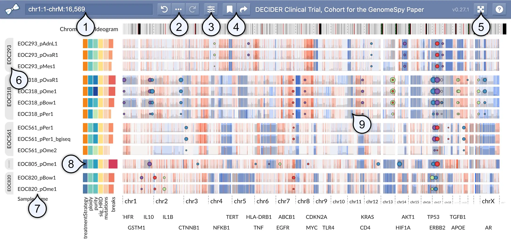
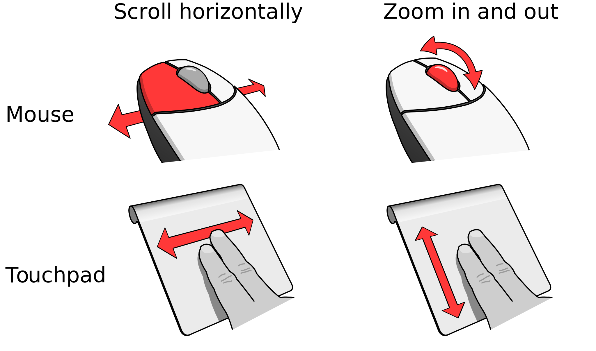
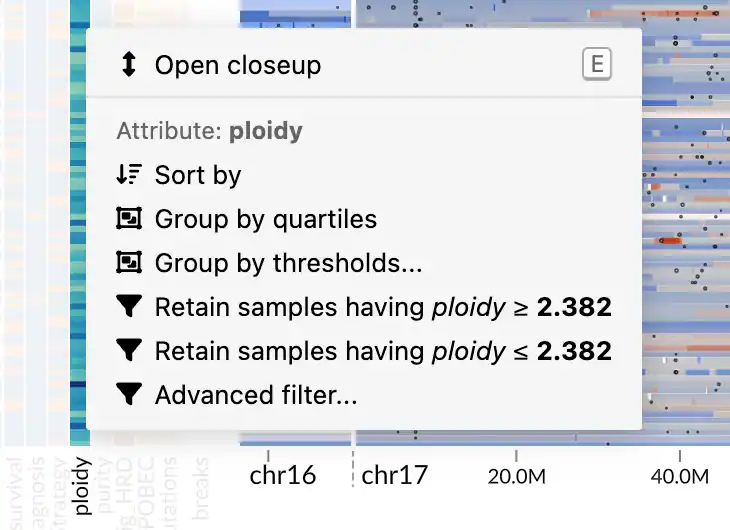
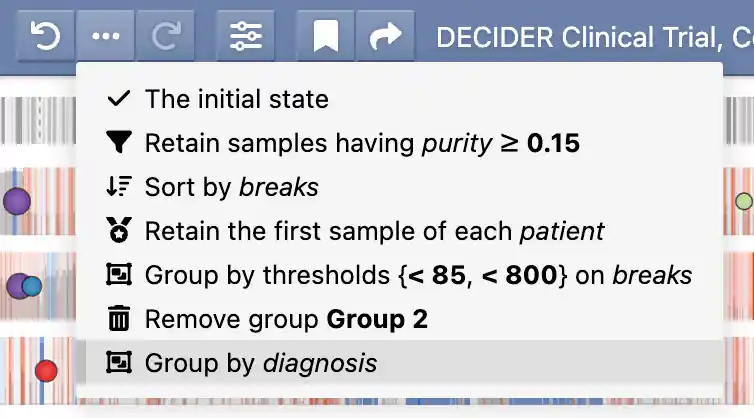
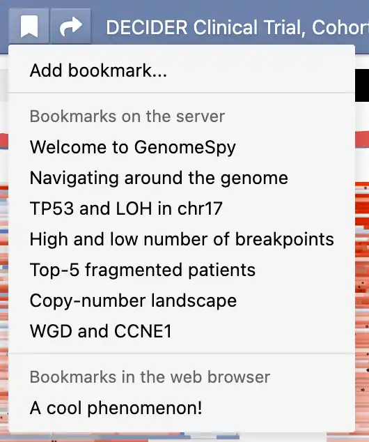

Analyzing Sample Collections¶
End-User Documentation
This page is mainly intended for end users who analyze sample collections interactively using the GenomeSpy app.
Elements of the user interface¶
Because GenomeSpy visualizations are highly customizable, the actual visualization and the available user-interface elements may differ significantly from what is shown below.

- Location / search field shows the genomic coordinates of the current viewport in a UCSC-style format. You can look up features such as gene symbols using the field. In addition, you can filter the sample collection by categorical metadata attibutes by typing a categorical value into this field.
- Undo history and provenance allows you to undo and redo actions performed on the sample collection. The provenance () button shows all perfomed actions, allowing you to better understand how the current visualization state was constructed.
- View visibility menu allows for toggling the visibility of elements such as metadata attributes or annotation tracks.
- Bookmark menu shows a list of pre-defined bookmarks and allows you to save the visualization state as a local bookmark into your web browser. The adjacent Share () button constructs a shareable URL, which captures the visualization state and optional notes related to the current visualization state.
- Fullscreen toggle opens the visualization in fullscreen mode.
- Group markers become visible when the sample collection has been stratified using some attribute.
- Sample names identify the samples.
- Metadata such as clinical attributes or computed variables shown as a heatmap.
- Genomic data is shown here.
Navigation interactions¶
Navigating around the genome¶

To navigate around the genome in GenomeSpy, you can use either a mouse or a touchpad. If you're using a mouse, you can zoom the genome axis in and out using the scroll wheel. To pan the view, click with the left mouse button and start dragging.
If you're using a touchpad, you can zoom the genome axis by performing a vertical two-finger gesture. Similarly, you can pan the view by performing a horizontal gesture.
Peeking samples¶
The GenomeSpy app is designed for the exploration of large datasets containing hundreds or thousands of samples. To provide a better overview of patterns across the entire sample collection, GenomeSpy displays the samples as a bird's eye view that fits them into the available vertical space. If you discover interesting patterns or outliers in the dataset, you can peek individual samples by activating a close-up view from the context menu or by pressing the E key on the keyboard.
Once the close-up view is activated, the zooming interaction will change to vertical scrolling. However, you can still zoom in and out by holding down the Ctrl key while operating the mouse wheel or touchpad.
Manipulating the sample collection¶
Sorting, filtering, and stratifying a large sample collection can provide valuable insights into the data by helping to identify patterns and outliers. By sorting samples based on a particular attribute or filtering out irrelevant samples, you can more easily identify patterns or trends in the data that might be difficult to see otherwise. Stratifying the sample collection by grouping samples into distinct categories can also help to identify meaningful differences between groups and reveal new insights into the data.
The GenomeSpy app enables users to manipulate the sample collection using incremental actions that operate on abstract attributes, such as metadata variables or measured values at specific genomic loci. By applying a series of these stepwise actions, users can gradually shape the sample collection to their needs, enabling complex analyses. The applied actions are saved in an undo history, which also serves as provenance information for bookmarks and shared links.
An example scenario
Suppose a user has a sample collection that includes multiple tumor samples from each patient and wants to keep a single representative sample from each patient. The user defines a representative sample as having a tumor purity greater or equal to 15% and the highest copy number at the MYC locus. To form a sample collection with only the representative samples, the user performs the following actions:
- Retains samples with purity greater than or equal to 15%
- Sorts the samples in descending order by the copy number at the MYC locus
- Retains only the top sample from each patient, based on the sorting in Step 2
Following these steps, the user is left with the representative samples.
Accessing the actions¶

You can access the actions via a context menu, which appears when you right-click on a metadata attribute in the heatmap or a location in the genomic data panel.
There are two types of attributes: quantitative and categorical. Each type has a different set of supported actions. For example, quantitative attributes can be filtered using a threshold, while categorical attributes support retention or removal of selected categories.
The context menu also provides shortcuts to some actions based on the value under the cursor. For example, a context menu opened on a categorical attribute will give you actions for retaining or removing samples with the selected categorical value.
Undo history and provenance¶

GenomeSpy stores the applied actions in an undo history, allowing you to easily experiment with different analyses and revert back to previous states if needed. The provenance button () reveals a menu that shows the applied actions together with the used attributes and parameters. You can jump to different states in the undo history by clicking the menu items or the adjacent previous/next buttons.
The actions¶
Sort¶
The Sort by action arranges the samples in a descending order based on the chosen quantitative attribute.
Filter by a categorical attribute¶
The context menu provides two shortcut actions for retaining and removing samples having the chosen value in the selected attribute. The Advanced filter... option allows you to choose multiple categories to be retained or removed.
Filter by a quantitative attribute¶
For quantitative attributes, the menu offers shortcut actions for retaining samples with a value greater or equal to or less or equal to the chosen value. For more precise thresholding, you can use the Advanced filter... option, which opens a dialog with a histogram and options for choosing open or closed thresholds.
Retain the first of each¶
In many analyses, it is necessary to select a single, representative sample from each category. This action retains the first, topmost sample from each category. It is not necessary to sort the samples by the categorical attribute, but rather they should be sorted according to the attributes used to select the representative samples. For a usage example, refer to the example scenario provided in the box above.
Retain first n categories¶
Sometimes you might be interested in a small number of categories that contain samples with the most extreme values in another attribute. For example, if each patient (the category) has multiple samples, this action allows you to retain all samples from the top-5 patients based on the highest number of mutations (the another attribute) in any of their samples.
Create custom groups¶
Use this action to manually select and group multiple categories together according to your specific requirements. This feature allows you to create new groups that contain any combination of categories from your data, giving you the flexibility to organize and view your data in customized groupings.
Group by categorical attribute¶
This action stratifies the data based on the selected categorical attribute. The groups will be shown to the left of the sample names, as shown above.
Group by quartiles¶
This action enables rapid stratification into four groups using a quantitative attribute. The implementation uses the R-7 method, the default in the R programming language and Excel.
Group by thresholds¶
The group by thresholds action allows stratifying the samples using custom thresholds on a quantitative attribute. Upon selecting this action, you are shown a dialog with a histogram, where you can add any number of thresholds and specify which side of the threshold should be open or closed.
Retain matched¶
This action retains categories that are common to all of the current groups. For example, suppose you are working with a sample collection with multiple samples from each patient. You have grouped the samples into two groups based on the anatomical site of the sample. By applying this action to the categorical patient attribute, you can ensure that your sample collection comprises only those patients with samples from both anatomical sites. In other words, the patients with only a single anatomical site are removed.
Bookmarking and sharing¶
Saving a visualization state together with provenance as a bookmark is a practical way to revisit a particular visualization later or share it with others. Bookmarks store the entire state of the visualization, including the actions taken to arrive at that state. This allows for easy and reproducible sharing of findings from the data. Moreover, bookmarks support optional Markdown-formatted notes that allow communicating essential background information and possible implications related to the discovery.
Bookmarks¶

GenomeSpy supports two types of bookmarks: pre-defined bookmarks that the visualization author may have included with the visualization and local bookmarks that you can save in your web browser. You can access both types of bookmarks from the bookmark menu (). Additionally, you can remove or edit existing bookmarks through a submenu that appears when you click the ellipsis button ().
Sharing¶
The current visualization state is constantly updated to the web browser's address bar, allowing you to quickly share the state with others. However, for better context, GenomeSpy's sharing function provides the option to include a name and notes with the shared state. Additionally, recipients can conveniently import the shared link into their local GenomeSpy bookmarks. You can share the current state by clicking on the Share () button, or share an existing bookmark by selecting the Share option from the bookmark's submenu.